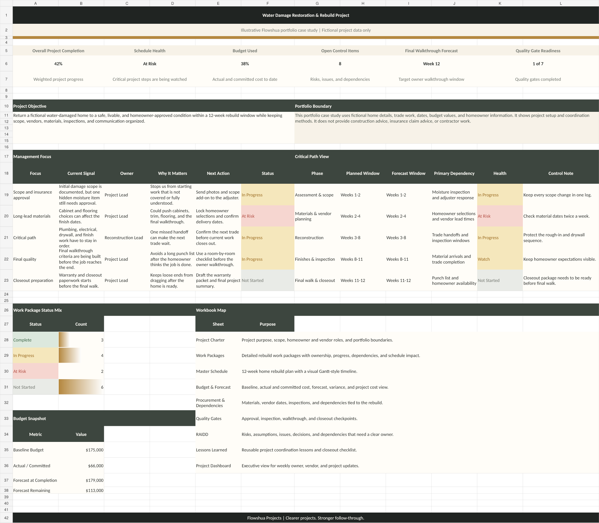
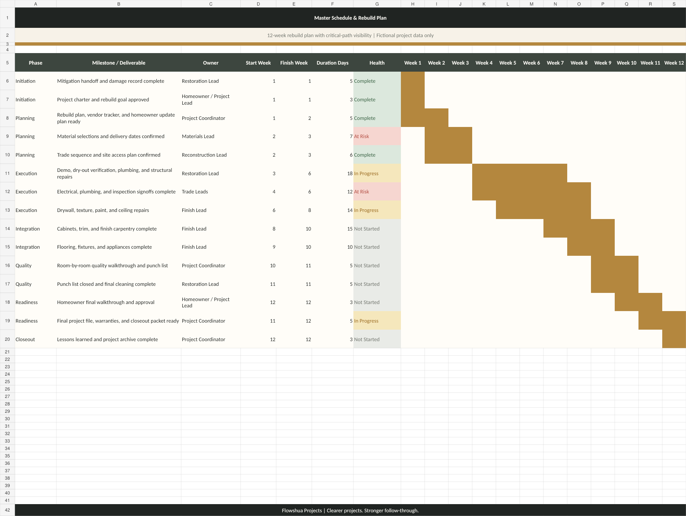
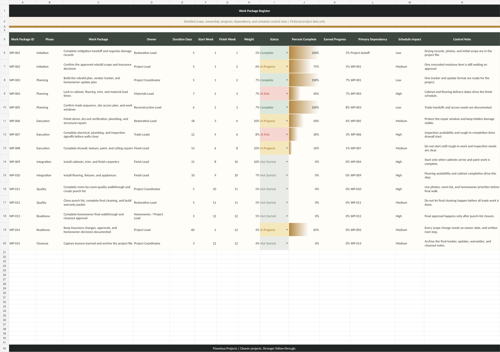
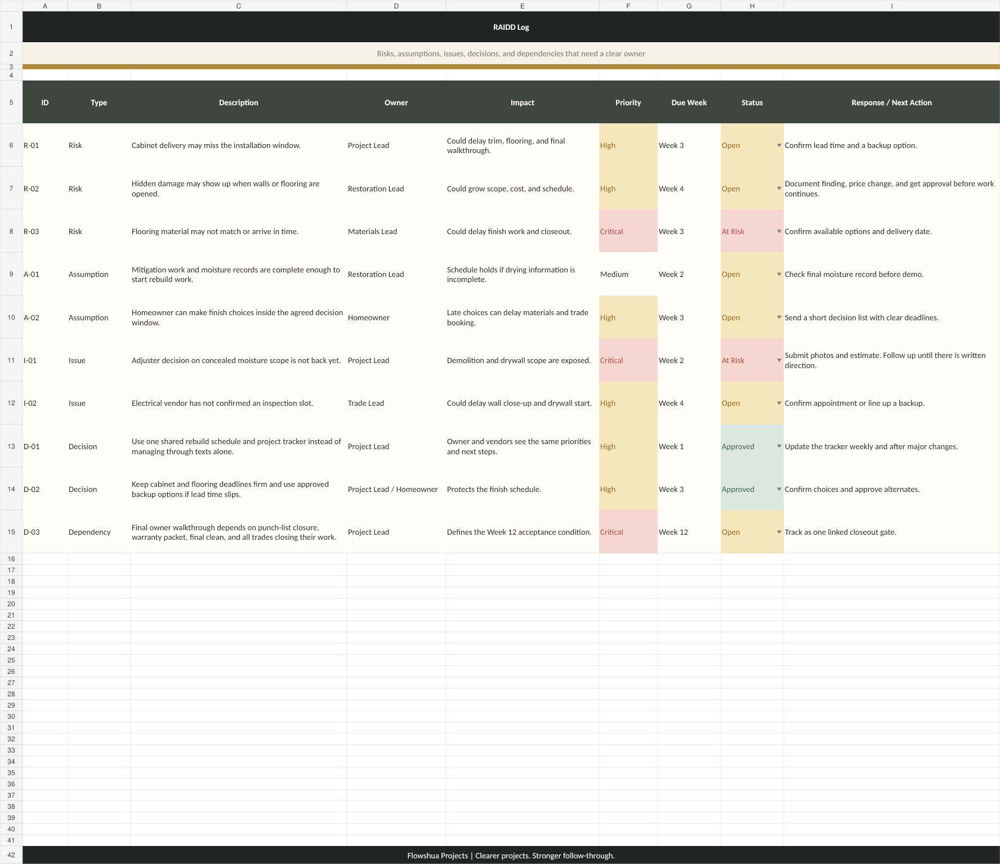

Project Setup
Define the project goal, scope boundaries, milestones, owners, assumptions, decisions, and communication rhythm.
A fictional portfolio case study showing how a water-damage restoration rebuild can be coordinated across vendors, approvals, materials, scope changes, schedule impacts, and owner follow-up.
Define the project goal, scope boundaries, milestones, owners, assumptions, decisions, and communication rhythm.
Keep vendors, internal owners, approvals, materials, dependencies, changes, and follow-up actions visible.
Use dashboards, schedules, work packages, and RAIDD tracking to make progress and risk easier to manage.
Give leadership a straightforward view of what is done, what is blocked, what changed, and what happens next.
The screenshots below use the existing static PNG assets in the repository root.
A summary view for progress, milestones, budget or effort signals, risks, and next steps.

A schedule view that makes phases, dependencies, timing risk, and upcoming milestones easier to discuss.

A work-package view that clarifies ownership, status, dependencies, and follow-up actions.

A risk, action, issue, decision, and dependency log that turns project noise into owned follow-up.

Downloads are optional and kept separate from the main case-study cards so visitors can review the static page first.
{kind=link}
{kind=link}
{kind=link}
{kind=link}